The 6 baked shots of emb-cine, each with the background the
game draws and the depth map it occludes the character against — both out of one Cycles
session on one camera, so the image and the occlusion cannot disagree. Every number below is
read from the bake (cine.json) and the solve, never typed here.
square/festival.png and entrance/main.png — are already lit by it.
Golden hour is one re-run away: the grade is two fields of defaults and nothing else.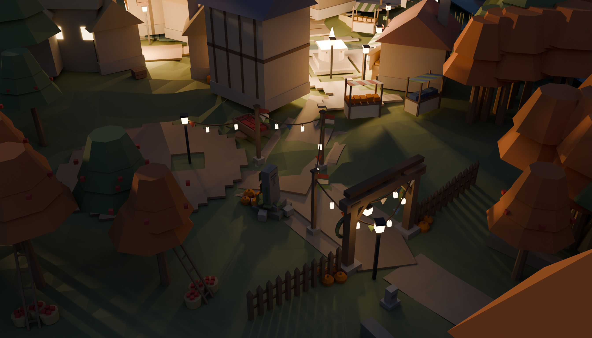
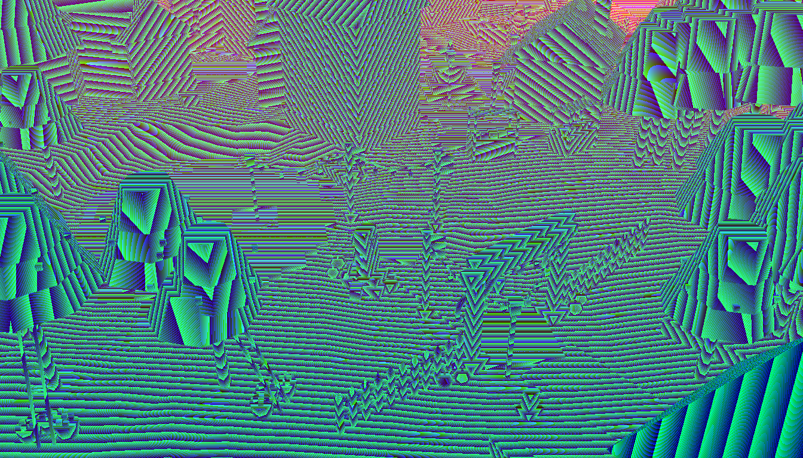
Arrival, and the game's first frame. From inside the village on the high west shoulder, looking back south down the road: the orchard rows falling away on the right with their ladders and baskets, the waystone on the bend, the timber arch and its harvest wreaths at the bottom of the road, and the valley the player has walked up beyond it. The road runs AWAY from camera, so the arch reads as a threshold you came through rather than a door you are about to open.
| authored | yaw 260 · pitch 32 · margin 0.08 · fov 35 |
|---|---|
| solved | pos [23.2, -13.4, 15.6] → aim [27.1, 8.8, 1.5] · standoff 26.51 m |
| legibility | character 96…62 px of 768 · region in frame 100.0% |
| visibility | 71.9% of 64 probes unoccluded (bar 45%) · depth 9.0…65 m |
| owns | road-gate waystone orchard river-vistaroad-gate__waystone waystone__orchard waystone__square-plaza@0..0.45 |
| why | MEASURED THREE TIMES, and the third answer is the shipped painting's. yaw 105 put the INN in the sightline (9.4% of 64 probes; 40 of them stopped on emb_sq_inn_walls). A 288-position yaw/pitch sweep ray-cast against the live master offered yaw 120 at 86%, which is the road's own bearing and satisfies the plan's words exactly — and the RENDER refused it: from up the lane the camera looks over Festival Square, so the frame reads as a rooftop view of the plaza with a gate somewhere in the distance, and the arrival is not the arrival. yaw 260 stands the camera SOUTH of the arch looking north, 94% visible, and it is the composition public/assets/scenes/entrance/main.png already accepted: dark wood and the orchard closing screen-left, the arch and its lamp a threshold in the near field, the road running AWAY from camera up the rise, the village warm at the top of frame. The plan's phrase is 'looking back south through the arch'; the plan's REASONS — the road runs away, the arch reads as a threshold you came through, the orchard frames — are all better served looking north, and the accepted painting settles it. Flagged for the board as an intent deviation with the render attached. |
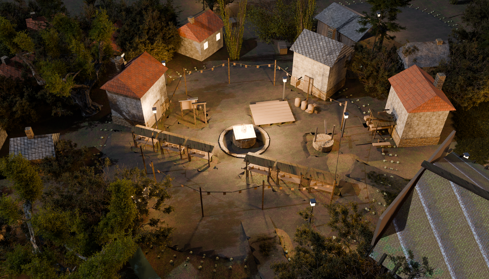
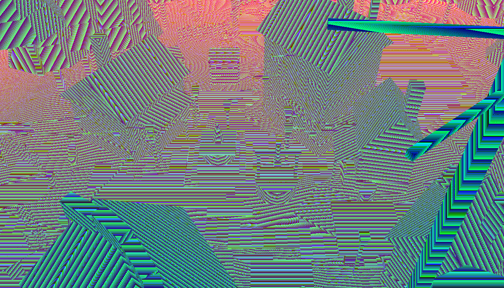
The postcard of home. Across the plaza from the north, with the Heartlight on its pedestal centre-frame and brightest — the inn's stone steps and lit windows to the right, the item shop and the notice board to the left, the bakery's warm window closing the west side, stalls and bunting around the ring, and the road running away south down the rise the player just climbed. This is the frame Chapter One takes away.
| authored | yaw 90 · pitch 42 · margin 0.07 · fov 35 |
|---|---|
| solved | pos [30.2, 39.9, 19.0] → aim [30.2, 21.8, 2.7] · standoff 24.26 m |
| legibility | character 115…65 px of 768 · region in frame 100.0% |
| visibility | 62.5% of 64 probes unoccluded (bar 45%) · depth 5.2…45 m |
| owns | square-plaza heartlight item-shop inn notice-board well bakerywaystone__square-plaza@0.45..1 square-plaza__item-shop square-plaza__inn square-plaza__notice-board square-plaza__well square-plaza__bakery square-plaza__pond-jetty@0..0.352 square-plaza__hillside-cottage@0..0.569 square-plaza__barn@0..0.573 brook-bridge__square-plaza@0.445..1 |
| why | FROM THE NORTH AND HIGH, and both halves are measured. NORTH: the plaza's four solid neighbours are the inn (27,18), the item shop (37,19), the notice board (34.5,19.5) and the bakery (23.6,22.7) — three of them SOUTH of the plaza centre and one WEST, so a camera on the south or west side puts a building between itself and the floor it owns; north of the plaza there is only the well's low stone ring. HIGH (pitch 42, not 32): at 32 a lamppost stood floor-to-ceiling through the right of frame and the near-field roofs took the bottom third — rendered, looked at, rejected. 42 clears both, and it is also the best legibility in the set of square candidates that clear the visibility bar (78% of 64 probes, charPx far 68 against 50-61 for the high south-east angles). The old note follows, because its reasoning still holds: The plaza's four solid neighbours are the inn (27,18), the item shop (37,19), the notice board (34.5,19.5) and the bakery (23.6,22.7) — the first three all SOUTH of the plaza centre and the last WEST, so a camera on the south or west side puts a building between itself and the floor it owns. North of the plaza there is only the well's low stone ring. It is also the shipped painting's own composition: inn right, shop left, the road receding away. |
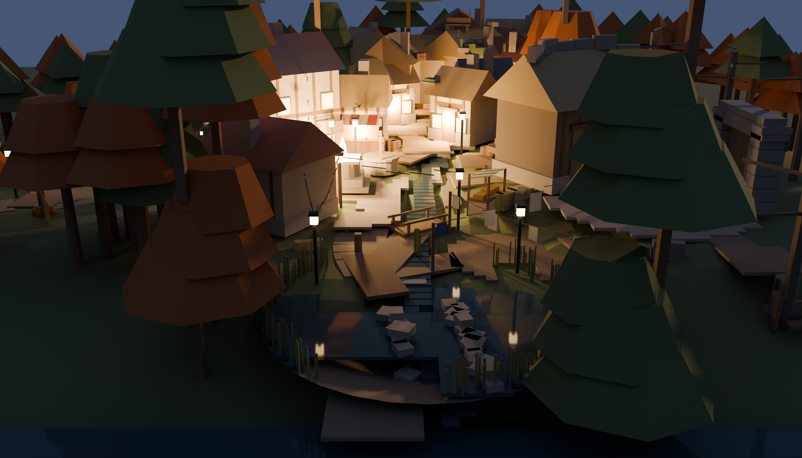
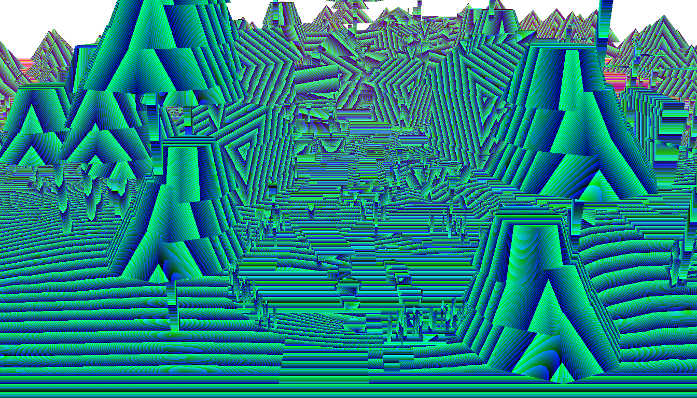
The quiet one. Low along the shore looking back west up the lane, the pond filling the near half of frame with the Heartlight's glow lying on the water, the jetty's piles in silhouette, the plank footbridge over the brook mid-frame and the washing lines on the green to the right. Frogs, fireflies, and the last lamp of Lake's round out at the jetty.
| authored | yaw 0 · pitch 20 · margin 0.09 · fov 35 |
|---|---|
| solved | pos [70.7, 25.2, 13.0] → aim [41.1, 25.2, 2.3] · standoff 31.47 m |
| legibility | character 101…55 px of 768 · region in frame 100.0% |
| visibility | 100.0% of 64 probes unoccluded (bar 45%) · depth 19.1…128 m |
| owns | pond pond-jetty washline-green brook-bridge brook-mouth east-cottagessquare-plaza__pond-jetty@0.352..1 pond-jetty__washline-green pond-jetty__brook-bridge brook-bridge__square-plaza@0..0.445 |
| why | yaw 35 measured 45.3% — the lane's own trees (veg_emb_ln_tree1_crown1/2) took 35 of 64 probes. The sweep found the pond lane readable from both ends of its axis: looking EAST from the square side scores 100% at charPxFar 69, looking WEST from beyond the pond scores 100% at charPxFar 55. WEST wins on intent and the intent is the map's own (`p-lane`: 'the Heartlight's glow mirrored in the pond'), because a reflection is only visible from the far side of the water from its source. The cost is 14 px of far character height, paid knowingly for the shot the town was designed to have. |
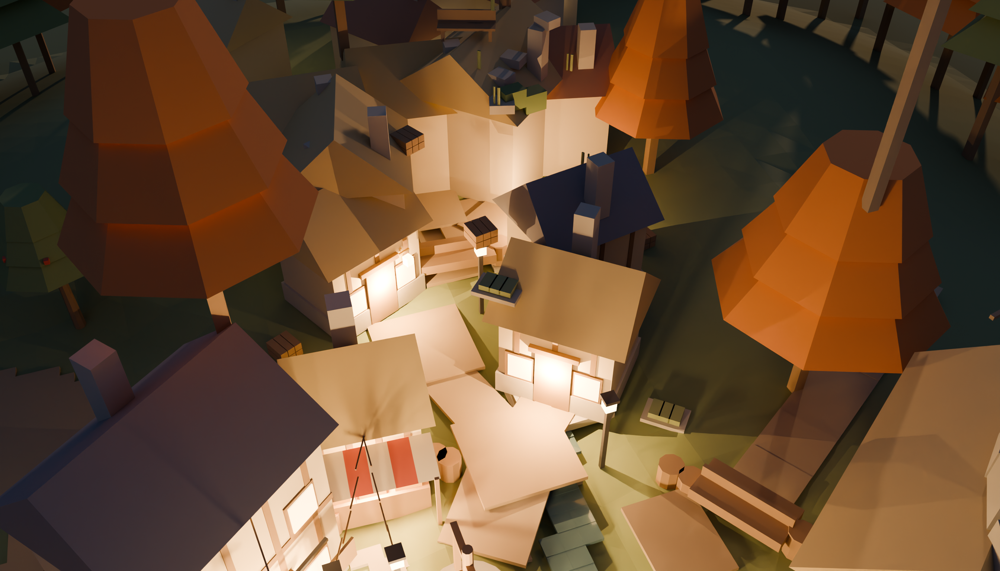
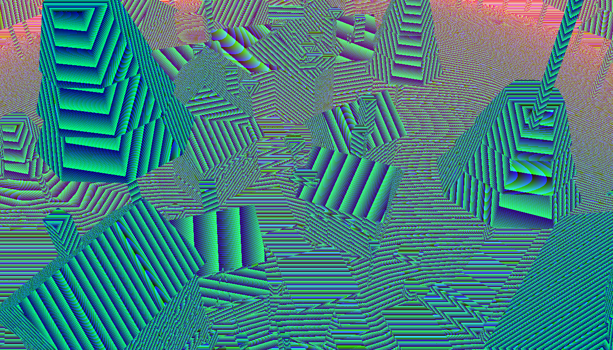
Lake's round, first leg. Broadside to the home lane from below the rise, the cottages stepping up it west to east — Mara & Pip's at the junction, the keeper's cottage with its herbs over the door and the brass lighter inside, Rowan's ledgers at the top — the lane ending at the hilltop bench with the whole village and valley falling away behind. A lamppost at every door, and the brook running down between the row and the square.
| authored | yaw 340 · pitch 42 · margin 0.09 · fov 35 |
|---|---|
| solved | pos [39.6, 20.9, 22.5] → aim [19.6, 28.2, 3.4] · standoff 28.63 m |
| legibility | character 93…61 px of 768 · region in frame 100.0% |
| visibility | 64.1% of 64 probes unoccluded (bar 45%) · depth 13.8…61 m |
| owns | hillside-cottage lake-home elder-house home-lane-end brook-spring upper-lane-closed far-rooftops-nw hillside-cottagessquare-plaza__hillside-cottage@0.569..1 hillside-cottage__lake-home hillside-cottage__elder-house elder-house__home-lane-end |
| why | PROVISIONAL, and the only frame in the set that is. yaw 225 put the camera 1.18 m inside veg_emb_hr_tree6_crown1 (0.0% of 64 probes). Home Row's geometry is still moving — hillside-cottage was searched to a new coordinate and the lane bowed above Rowan's house while this was being authored — so this frame is the best of the sweep re-run against the CLOSED master (64.1%, up from 35.9% at the frame baked before the trees moved) and is RE-SWEPT after the district freezes, together with the coordinator's hilltop-bench lead: from the bench the Heartlight and the brook's downhill run sit in the same east-south-east quadrant, and a wider lens may hold the flame and the town's name in one frame. If that fights exit-framing or the no-sliver floor, seam canon wins and the bench view goes on the board as a taste option. |
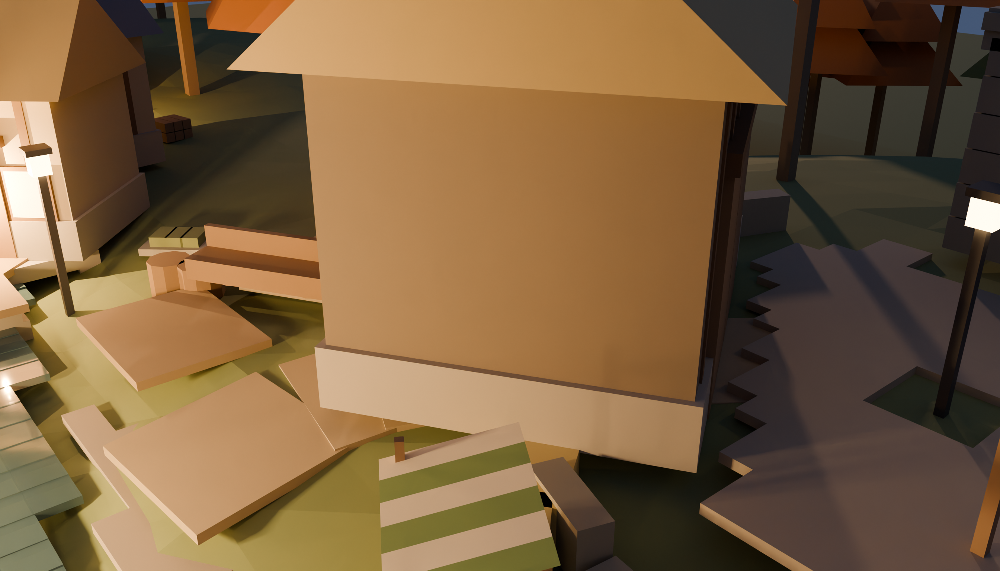
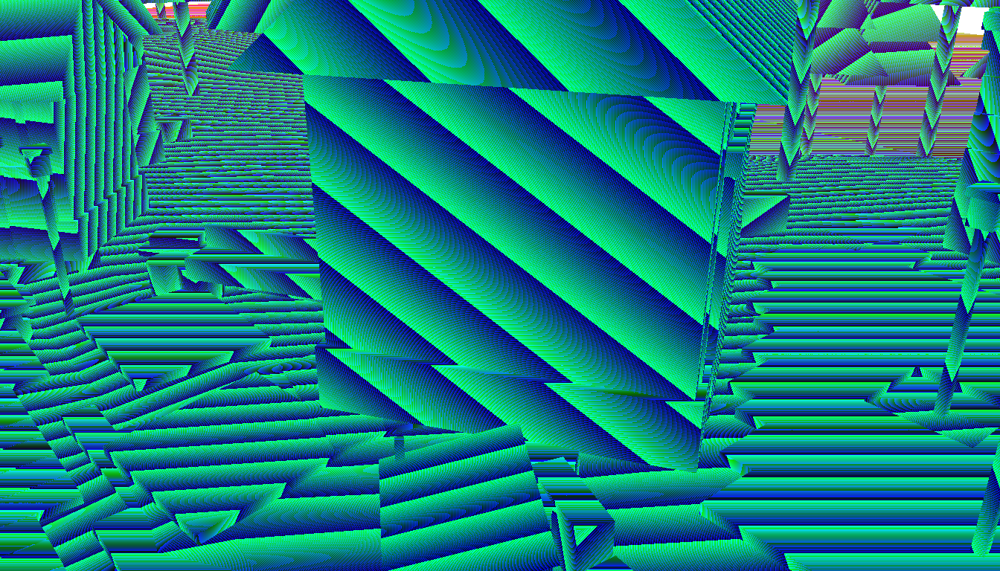
The walled climb. Side-on from over the pond, the lane running up the frame between its dry-stone walls from the square's north edge to the tithe barn, which is its landmark and its turn — cats in the rafters, harvest stores, and the back lane closed off with stacked Emberwake barrels. Above the barn the lane bends away east toward the gate court and the old edge of the village.
| authored | yaw 320 · pitch 24 · margin 0.1 · fov 35 |
|---|---|
| solved | pos [41.6, 25.6, 8.3] → aim [33.2, 32.6, 3.5] · standoff 12 m |
| legibility | character 212…136 px of 768 · region in frame 100.0% |
| visibility | 62.5% of 64 probes unoccluded (bar 45%) · depth 6.8…101 m |
| owns | barn back-lane-closedsquare-plaza__barn@0.573..1 barn__gate-court |
| why | yaw 5 put the camera INSIDE veg_emb_ln_tree2_crown2 — three of six axis probes hit at 0.00 m, which is the 'camera in a tree crown' case the square builder paid for: the ray to the subject was clear THROUGH the far leaves, and the render would have been a wall of green at the near clip. 0.0% of 64 probes. yaw 270 stood the camera due south on the lane's own axis and measured 50%, then 43.8% once the closing round moved the lane's trees and re-baked; yaw 320 measured 62.5% from the shoulder above the pond and was baked — and then tools/arrival_probe.py against that plate returned 0.0% for BOTH of this shot's arrivals: the tithe barn stands between that camera and each end of its own lane, so a player entering the north lane from either direction MATERIALISED AS A GHOST. That is seam-canon 9.2 at the one moment it costs most and 10.2's 'arrives invisible' sub-signal, and it is worth more than region coverage. A ray-cast sweep of all 288 angles against BOTH arrival points, at chest and head height, says NO CAMERA POSITION IN THE TOWN SEES BOTH: the best any angle manages is one of the two, and most see neither. The reason is not the camera and re-aiming cannot fix it (seam-canon 9.3): the occluder is emb_gt_barn_walls and emb_gt_barn_roof — THIS SHOT'S OWN SUBJECT — and the tithe barn stands at (33,34), which is the lane's own terminus, with the gate-court arrival 2 m past it. So the frame is chosen on region visibility, where it can still be chosen well, and the arrivals are moved instead (see _arrivals_why). A note for whoever moves the barn: this shot gets materially better the day it steps off the end of its lane. The remaining occlusion is the TITHE BARN, which is this shot's own subject standing in front of the lane behind it — the correct kind. |
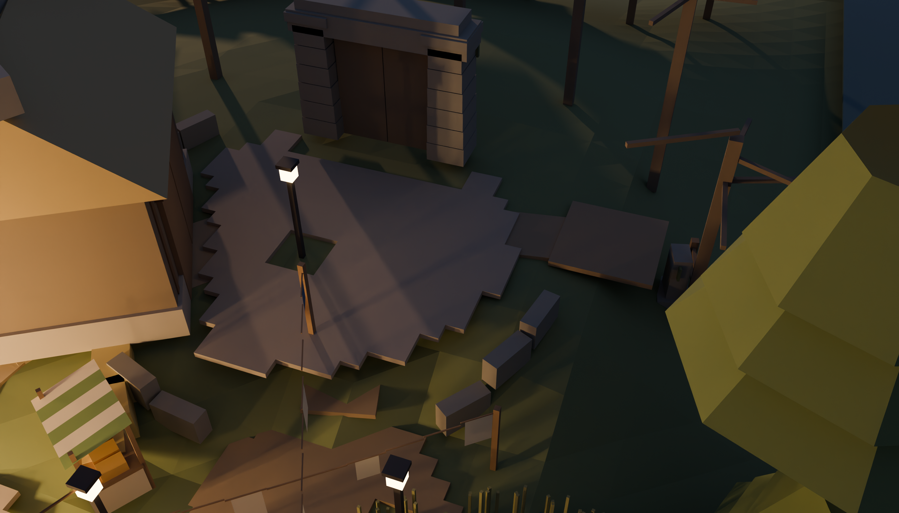
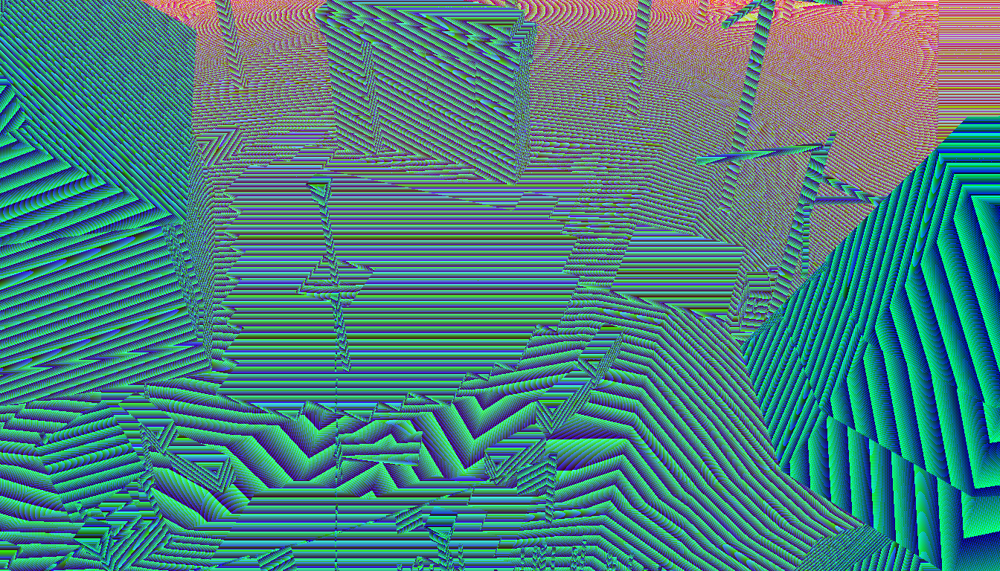
Chapter One's set-piece stage, and the only unwarm frame in the town. The flag-stoned court from the south, facing the sealed gate square-on with its twin sigil plates in the ground before it, the Whisperwood trailhead and its stile away to the right, the barn's roofline behind on the left. No lamp reaches here — nobody's warmth does — so the court reads gray against a village that is all lamplight.
| authored | yaw 290 · pitch 42 · margin 0.08 · fov 35 |
|---|---|
| solved | pos [46.5, 22.7, 16.2] → aim [41.6, 36.1, 3.3] · standoff 19.23 m |
| legibility | character 134…83 px of 768 · region in frame 100.0% |
| visibility | 100.0% of 64 probes unoccluded (bar 45%) · depth 9.1…46 m |
| owns | gate-court sigil-gate forest-trailhead downstream-vistagate-court__sigil-gate gate-court__forest-trailhead washline-green__gate-court |
| why | yaw 270 measured 0.0%: due south of the court the sightline runs the whole length of the town and the POND LANE's trees (veg_emb_ln_tree4_crown1, tree2_crown1) close it 20 m short of the subject. Twenty degrees east and eight degrees up clears them at 63%. The composition the plan asked for survives the move exactly — measured against the solved frame, the trailhead stile falls screen-right, the sealed gate left of centre, the tithe barn's roofline far left. |
Generated by tools/emb_sheet.mjs from
emb-cine/cine.json + emberbrook.cameras{,.solved}.json.